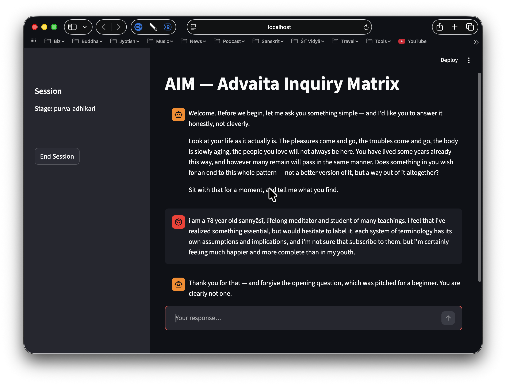
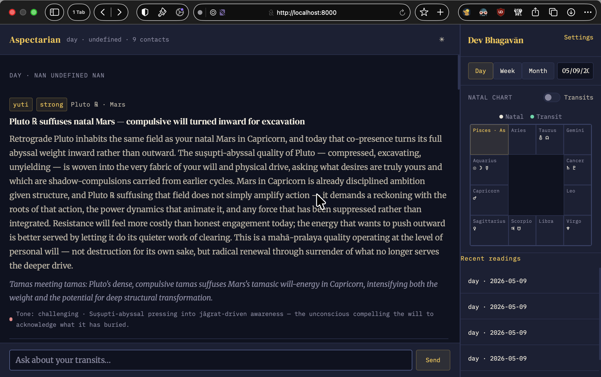
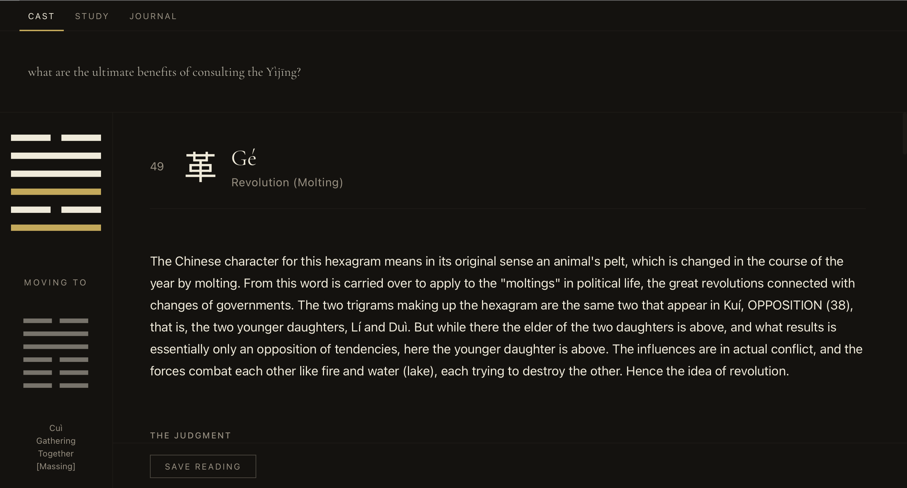

AIM
AIM is an experimental AI-oriented systems platform focused on structured interaction, workflow coherence, and intelligent guidance. Rather than treating AI as a novelty layer, the project explores how large language models can participate within carefully designed human-centered systems.
The emphasis is not merely on automation, but on creating interfaces that preserve orientation, continuity, and conceptual clarity while interacting with complex tools.
- Specification-first workflow architecture
- Human-guided AI interaction systems
- Structured conversational interfaces
- Long-form continuity and memory exploration

Jyotiṣa Aspectarian
The Jyotiṣa Aspectarian is a specialized astrological platform designed to visualize planetary relationships, transits, and dynamic aspect structures across time.
The project combines traditional Jyotiṣa concepts with contemporary interface design, emphasizing readability, temporal navigation, and symbolic coherence rather than excessive visual complexity.
- Swiss Ephemeris integration
- Transit and aspect visualization systems
- Lunar-cycle-oriented navigation
- Human-readable astrological architecture

Zhēn Yì
Zhēn Yì is a focused desktop application for working with the Yìjīng (易經), the Book of Changes. It brings together three traditional practices — casting a reading in the spirit of the yarrow-stalk method, studying the sixty-four hexagrams through the full Wilhelm translation in Pīnyīn romanisation, and maintaining a personal journal of readings over time — within a single, local, single-user environment designed for the experienced practitioner rather than the curious newcomer.
- Yarrow-stalk-faithful casting algorithm
- Full Wilhelm translation with Pīnyīn romanisation
- Local-first journal of readings
- Quiet, dark-themed interface for sustained study